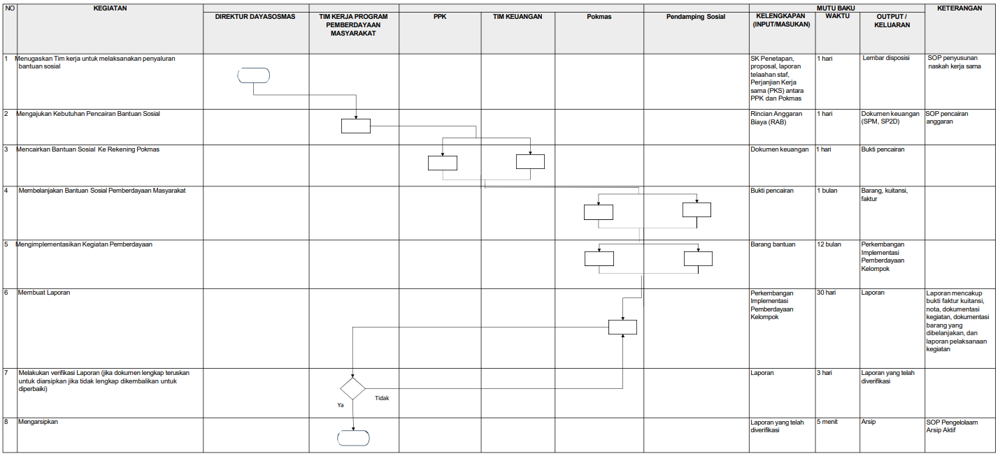

Penyaluran Bantuan Sosial dan Monitoring Evaluasi
Alur penyaluran bantuan sosial dari penugasan tim sampai laporan Pokmas terverifikasi, dilanjutkan monitoring dan evaluasi pelaksanaannya.
Deskripsi SOP
SOP Penyaluran Bantuan Sosial Pemberdayaan Masyarakat mengatur pencairan dana bantuan ke rekening Pokmas dan memastikan pemanfaatannya sesuai rencana serta dapat dipertanggungjawabkan.
Direktur Dayasosmas menugaskan Tim Kerja untuk menyalurkan bantuan berdasarkan SK Penetapan dan Perjanjian Kerja Sama (PKS) antara PPK dan Pokmas. Tim Kerja mengajukan kebutuhan pencairan, lalu PPK dan Tim Keuangan mencairkan dana ke rekening Pokmas. Pokmas dengan pendampingan Pendamping Sosial membelanjakan dana sesuai RAB, melaksanakan kegiatan, dan membuat laporan penggunaan dana. Tim Kerja memverifikasi laporan itu sebelum diarsipkan.
Pihak yang terlibat
- Direktur Dayasosmas
- Tim Kerja Program Pemberdayaan Masyarakat
- PPK
- Tim Keuangan
- Pokmas
- Pendamping Sosial
Kualifikasi pelaksana
- Memahami penyaluran bantuan sosial
- Mampu melakukan verifikasi dan validasi dokumen
- Mampu melakukan koordinasi
- Memiliki kemampuan administrasi
Terkait dengan SOP
- SOP Pengelolaan Arsip Aktif
- SOP Pencairan Anggaran
- SOP Penyusunan Naskah Kerja Sama
Flowchart

Tahapan kegiatan
Menugaskan tim kerja untuk melaksanakan penyaluran bantuan sosial
Direktur Dayasosmas
SK Penetapan, proposal, laporan telaahan staf, Perjanjian Kerja Sama (PKS) antara PPK dan Pokmas
1 hari
Lembar disposisi
Lihat SOP Penyusunan Naskah Kerja Sama.
Mengajukan kebutuhan pencairan bantuan sosial
Tim Kerja
Rincian Anggaran Biaya (RAB)
1 hari
Dokumen keuangan (SPM, SP2D)
Lihat SOP Pencairan Anggaran.
Mencairkan bantuan sosial ke rekening Pokmas
PPK dan Tim Keuangan
Dokumen keuangan
1 hari
Bukti pencairan
Membelanjakan bantuan sosial pemberdayaan masyarakat
Pokmas dan Pendamping Sosial
Bukti pencairan
1 bulan
Barang, kuitansi, faktur
Mengimplementasikan kegiatan pemberdayaan
Pokmas dan Pendamping Sosial
Barang bantuan
12 bulan
Perkembangan implementasi pemberdayaan kelompok
Membuat laporan
Pokmas dan Pendamping Sosial
Perkembangan implementasi pemberdayaan kelompok
30 hari
Laporan
Laporan mencakup bukti faktur, kuitansi, nota, dokumentasi kegiatan, dokumentasi barang yang dibelanjakan, dan laporan pelaksanaan kegiatan.
Memverifikasi laporan
Tim Kerja
Laporan
3 hari
Laporan yang telah diverifikasi
Jika lengkap, diteruskan untuk diarsipkan. Jika tidak lengkap, dikembalikan untuk diperbaiki.
Mengarsipkan
Tim Kerja
Laporan yang telah diverifikasi
5 menit
Arsip
Lihat SOP Pengelolaan Arsip Aktif.
Monitoring dan evaluasi
Setelah bantuan disalurkan, pelaksanaannya dipantau dan dievaluasi. Peralatan tambahan: Website Survey Kemensos (survey.kemensos.go.id). Pelaksana juga perlu mampu mengumpulkan, mengolah, dan menganalisis data, menggunakan instrumen monev, serta menyusun laporan dan rekomendasi hasil monev.
Menyusun rencana kerja serta instrumen monitoring dan evaluasi
Tim Kerja
DIPA, data Pokmas penerima bantuan, laporan Pokmas
1 hari
KAK dan instrumen monev
Memeriksa usulan rencana monitoring dan evaluasi
Direktur Pemberdayaan Sosial Masyarakat
Rencana kerja dan instrumen monev
1 jam
Lembar disposisi
Jika setuju, menugaskan tim melaksanakan monev. Jika tidak, dikembalikan untuk diperbaiki.
Melakukan koordinasi dengan pihak terkait
Tim Kerja
Surat pemberitahuan monev
1 hari
Laporan hasil koordinasi
Lihat SOP Pembuatan Surat Keluar.
Melaksanakan monitoring dan evaluasi
Tim Kerja bersama Pemda / Balai Besar / Perguruan Tinggi / Dinsos / Pendamping Sosial
Instrumen monev
5 hari
Instrumen yang sudah diisi
Mengolah data hasil monev, lalu menyusun konsep laporan dan rekomendasi tindak lanjut
Tim Kerja
Instrumen yang sudah diisi
4 hari
Konsep laporan
Memeriksa laporan dan rekomendasi tindak lanjut
Direktur Pemberdayaan Sosial Masyarakat
Konsep laporan
1 jam
Laporan
Jika disetujui, dilaporkan ke Dirjen. Jika tidak, dikembalikan untuk diperbaiki.
Menerima laporan dan rekomendasi, lalu memberikan arahan
Direktur Jenderal Pemberdayaan Sosial
Laporan
1 jam
Lembar disposisi
Mengarsipkan
Tim Kerja
Laporan dan lembar disposisi
5 menit
Arsip
Lihat SOP Pengelolaan Arsip Aktif.